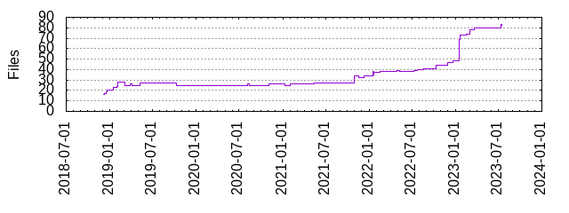

Files
- Total files
- 82
- Total lines
- 9780
- Average file size
- 4077.88 bytes

| Extension | Files (%) | Lines (%) | Lines/file |
|---|
| 21 (25.61%) | 851 (8.70%) | 40 |
| bash | 1 (1.22%) | 846 (8.65%) | 846 |
| bazel | 1 (1.22%) | 17 (0.17%) | 17 |
| bzl | 23 (28.05%) | 5065 (51.79%) | 220 |
| bzlmod | 1 (1.22%) | 0 (0.00%) | 0 |
| c | 1 (1.22%) | 3 (0.03%) | 3 |
| cc | 4 (4.88%) | 616 (6.30%) | 154 |
| json | 2 (2.44%) | 25 (0.26%) | 12 |
| m | 2 (2.44%) | 58 (0.59%) | 29 |
| md | 6 (7.32%) | 778 (7.96%) | 129 |
| py | 1 (1.22%) | 58 (0.59%) | 58 |
| sh | 12 (14.63%) | 1221 (12.48%) | 101 |
| toolchains | 1 (1.22%) | 23 (0.24%) | 23 |
| tpl | 1 (1.22%) | 89 (0.91%) | 89 |
| yaml | 1 (1.22%) | 9 (0.09%) | 9 |
| yml | 4 (4.88%) | 121 (1.24%) | 30 |